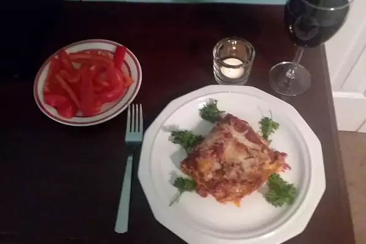

Lasagna Recipe

Description
Do you love Lasagna? I sure do! With this recipe both you and I can make it at home, and have a serving ready whenever heart desires!
Ingredients
- 12 uncooked lasagna noodles
- 1 pound sweet Italian sausage
- ⅔ cup chopped onions
- ½ tablespoon minced garlic
- ⅔ cup chopped fresh parsley, divided
- 3 (6 ounce) cans tomato paste
- 1 (15 ounce) can tomato sauce
- 2 cups water
- 1 ½ teaspoons Italian seasoning
- 1 ½ teaspoons dried oregano
- 1 ½ teaspoons dried basil leaves
- 1 pound part-skim ricotta cheese
- 1 (10 ounce) package chopped spinach, thawed and squeeze dried
- ½ cup grated Parmesan cheese
- 3 eggs
- 2 teaspoons garlic salt
- ¼ teaspoon ground black pepper
- 3 cups shredded mozzarella cheese
Steps
- Preheat oven to 350 degrees F (175 degrees C). Lightly grease a 9x13-inch baking dish.
- Bring a large pot of lightly salted water to a boil. Add lasagna noodles and cook for 8 to 10 minutes or until al dente; drain.
- In skillet over medium heat, brown the sausage with the onions, garlic and 1/2 the parsley; drain excess fat. Add tomato paste, tomato sauce, water, Italian seasoning, oregano, and basil; mix well. Simmer, covered, for 5 minutes; stirring occasionally.
- In a bowl, combine remaining parsley and ricotta, spinach, Parmesan, eggs, garlic salt, and pepper; mix well.
- Spread 2 cups sauce in the bottom of the prepared baking dish. Begin layering with 4 noodles, 1/2 cheese mix, 1/3 remaining sauce, and 1 cup mozzarella. Repeat this layer again; the last layer will be noodles, sauce and mozzarella cheese. Cover pan with aluminum foil.
- Bake in the preheated oven for 45 minutes. Remove the foil; bake, uncovered, an additional 10 minutes, or until cheese is bubbly and starting to brown. Let cool 10 minutes before serving.
Back to homepage